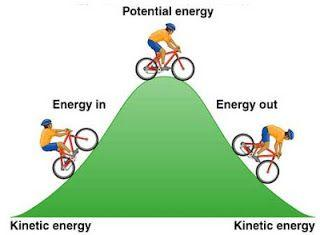

Bir Sistemin Enerjisi

Bir sistemin enerjisi, iş yapabilme kabiliyeti veya kapasitesi olarak tanımlanır ve sistemin sahip olduğu potansiyel (konum/durum) ile kinetik (hareket) enerjilerin toplamını ifade eder. Enerji yoktan var edilemez veya vardan yok edilemez, sadece bir formdan diğerine dönüşür.
Em = Ep + Ek
Burada Em toplam mekanik enerji, Ep potansiyel enerji ve Ek kinetik enerjidir. Potansiyel enerji, bir nesnenin konumuna veya durumuna bağlı olarak depolanan enerjidir (örneğin, yerçekimi potansiyel enerjisi). Kinetik enerji ise hareket halindeki bir nesnenin sahip olduğu enerjidir. Bir sistemdeki toplam mekanik enerji, bu iki enerji türünün toplamına eşittir.